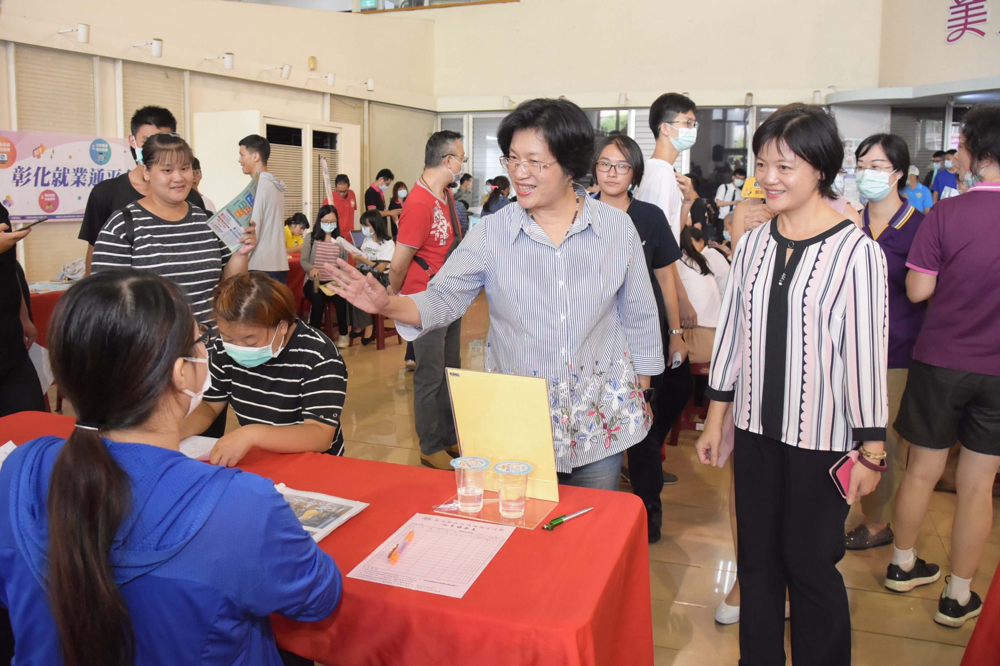
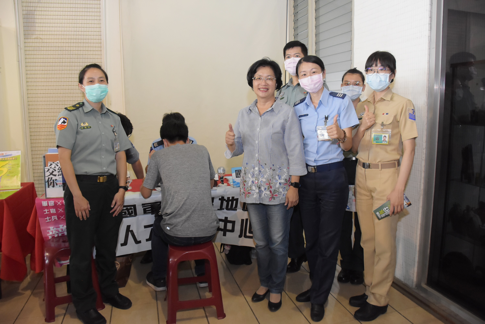

新聞內容 :
彰化縣政府拚經濟積極就業媒合，在畢業季後加碼兩場「就業啟航 職達未來」聯合徵才活動，第一場於今（9）日上午在縣府中庭舉行，截至中午完成，媒合率高達89%，第二場接著於7/10在北斗工業區管理中心登場，縣長王惠美表示，縣府辦理這二場聯合徵才活動，總計有31家廠商釋出約900個以上職缺，薪資最高月薪可達6萬元，緊接著，縣府今年度第2場就業博覽會，也將於8月1日在統一鹿港文創會館舉行，屆時也將有約36 家廠商，提供1,000個以上的工作機會，歡迎剛畢業者或需要找工作的鄉親把握機會，都能找到適當的工作。
第一場徵才活動，縣長王惠美現身為求職者加油打氣，勞工處長吳蘭梅陪同，期待透過就業媒合提供求職者更多就業機會，有效縮短待業週期，使求職者能儘早投入職場，並讓在地廠商，招聘更多好人才，繼續根留彰化，打造更優質的薪資福利及工作環境，落實在地化就業的理念，活絡彰化縣經濟發展。
參與徵才的廠商有高科技業、製造業、餐飲業及服務業等類別，提供工程師、儲備幹部、技術員、作業員、製造主管、機電維修人員、業務人員、品管員、倉管員、工務機修員、門市人員、保全、餐飲服務員等職缺，甚至包括至興、正新輪胎、矽品、台玻、永豐餘、慶豐富、上銀科技、岱宇國際、今國光學、維熹、全家等11家上市上櫃公司，提供求職民眾多元的選擇，以發揮所長，適才適所。
活動會場並提供專業「職涯諮詢」，協助求職民眾釐清職涯方向；亦邀請勞動部勞動力發展署中彰投分署之彰化就業中心活動現場設攤，提供勞動部「青年就業獎勵計畫」等相關青年就業協助方案之諮詢服務；活動會場也有國軍人才召募中心，提供有志加入國軍行列青年另一選擇；因應暑假將近，現場設有暑期工讀職缺媒合服務，提供給青年學子打工機會；另有「彰化就業通平台」服務專區，以首創就業地圖服務，提供民眾快速尋找彰化縣境內就業職缺資訊。
勞工處指出，第2場次「就業啟航 職達未來」聯合徵才活動將於7月10日上午9時起於彰化縣北斗工業區管理中心(北斗鎮新工三路60號)辦理，邀請13家廠商參與徵才，釋出約400個以上工作機會，另8月1日上午9時起在統一鹿港文創會館舉辦2020「就業薪動力 美好薪未來」第2場就業博覽會，歡迎有需求民眾踴躍參加；相關徵才活動訊息、職訓課程可撥打免付費專線0800-529191(我愛就業就業)或上網到彰化縣政府首頁-活動快訊查詢http://www.chcg.gov.tw)或台灣就業通(http://www.taiwanjobs.gov.tw)或彰化就業通平台(https://job.chcg.gov.tw/)或到彰化縣政府勞工處粉絲團(https://www.facebook.com/labor.chcg/)或隨時至彰化縣政府所設立的8處就業服務台洽詢。
 